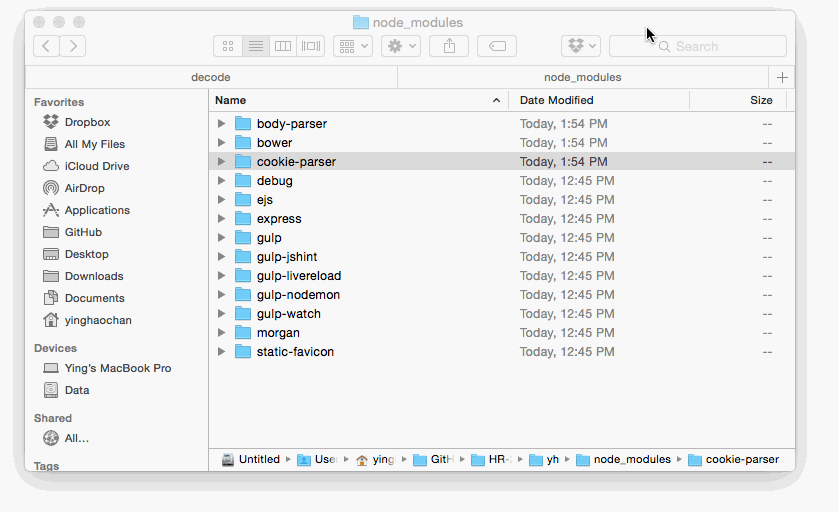
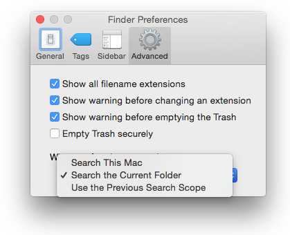

Awesome Finder finds
(also known as how to make OS X finder suck less)
Just a few years ago, dragging files into a folder would delete whatever previously used to be in there.
Thus, people used to the snappy, animation free nature of windows might find OS X sluggish and occasionally deadly to their data.
Here's how to ease (some) of that pain.
Where the heck am I?
To get the path in Finder, hit ⌥ + ⌘ + P
I can't even...
... navigate? You're not alone.
| I want to... | Workaround |
|---|---|
| 'cd ..' | ⌘ + ↑ |
| open files | ⌘ + ↓ |
| go home | ⇧ + ⌘ + H |
| See the Library | ⇧ + ⌘ + H , ⌘ + J |
See all the files
⌥ + click 
Search the current path
Open files like Sublime's ⌘ + P!
Open finder preferences by hitting ⌘ + , and do this:
